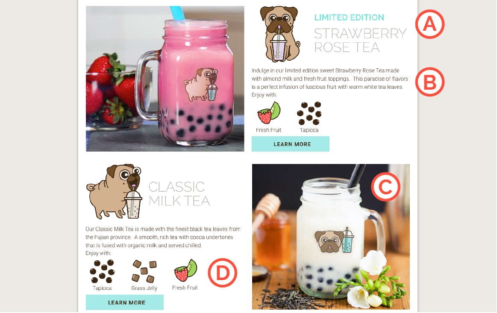

UX/UI Research | Branding | Responsive Design | Development
Introduction
Puggle Tea is a bubble tea shop that prides themselves in its love for dogs,
purity of ingredients, and passion for their products and customers.
Enjoy their artisanal beverages that are made with premium tea leaves (never powder!)
and homemade, organic toppings. Puggle Tea donates a small portion of their
monthly profits towards dogs in need of food and shelter.
The requirements for this project were to create a company, develop
its brand identity, market its products, and develop a responsive website.
Problem
According to DoSomething.org, approximately 2.7 million dogs and cats are killed each year due to shelter overpopulation. Statistics state that only 10% of the animals received by shelters have been spayed or neutered. Due to owners letting their pets accidentally or intentionally reproduce, millions of “excess” animals are euthanatized annually from overpopulation. In addition, homeless animals outnumber homeless people 5 to 1. These sources state there are simply too many animals in shelters, yet too few people are willing to adopt a pet.
Solution
Puggle Tea helps contribute in solving this issue of animal homelessness by donating
a portion of their monthly profits to dogs in need. Donations would help purchase
food, kennels, toys, vaccinations, and spaying/neutering these dogs.
By simply enjoying a delicious drink at Puggle Tea, you'd be helping dogs in need!
This case study involved user
research, user personas, user testing,
competitive analyses, wireframing, and
developing a one page responsive website in a
span of 5 weeks.
View the Puggle Tea website!
User Surveys
Prior to making any design decisions, I created a survey to determine necessary information for the Puggle Tea website and to better understand their potential customer base. The results of the user survey helped in making informed design decisions that catered to the customer's needs. Some questions that were asked:
- What are some important information you would like to know when visiting a new cafe's website?
- How important are images of the cafe's drinks/desserts on their website?
- Do you find it bothersome when companies ask you to donate to a charity while making a purchase?
- If a small portion of the company's monthly profits went towards helping animals in need, would you be more inclined to make a purchase?
This survey was distributed via online forums and social media. About 16 responses were obtained, and the key insights were as following:
- 93.8% found location/hours, detailed menu, and images of products were the most important information when visiting a new cafe's website.
- 100% of people stated it might be helpful to have a taste description for each drink.
- 93.8% found it might be helpful if recommendations on what goes well with each drink were provided.
- 93.8% would be interested in trying a beverage that's limited edition.
- 18% found it always bothersome when companies ask for donation when making a purchase; 37.5% found it sometimes bothersome.
- 87.5% would be more inclined to make a purchase if a small portion of the company's monthly profits went towards helping animals in need.
- 94.3% of people may want to read and learn more about a specific animal that is being helped.
User Personas
After sending out surveys and analyzing the results, I conducted informal follow-up interviews with a small number of respondents to dig deeper and discover specific ways to solve the problem at hand. The various conversations inspired the creation of two user personas. Kevin recently adopted a dog from a local shelter in NYC and has difficulty finding cafes and restaurants that are dog friendly. Lorena is a bubble tea lover that enjoys high quality teas made with fresh ingredients. These user personas allowed me to better understand the potential customers of Puggle Tea and to cater towards their needs. View the full user personas for Puggle Tea!
Competitive Analysis
For the competitive analysis, I did not want to solely focus on bubble tea vendors.
There are plenty of successful bubble tea shops throughout New York City,
but I wanted to take Puggle Tea a step further by incorporating a philanthropic
aspect to its brand identity. I wanted Puggle Tea to no only be remembered for their
high quality teas but also their support for dogs in need.
I chose to study how Taiyaki NYC (waffle & ice cream store in NYC),
Boba Guys (bubble tea shop), and Toms (well-known philanthropic shoe brand).
I chose Taiyaki NYC to see how they showcase their product as an uncommon,
innovative dessert. Boba Guys was chosen to see how they position themselves
in opposition to the many different bubble tea vendors in NYC. Lastly, I
chose Toms to determine how they combine their specific voice of
philanthropy with marketing their products.
View the full competitive analysis for Puggle Tea!
Inspirations & Brainstorming
When deciding on this project, I knew immediately I wanted to create a company that encompassed two of my passions - dogs and food! I did some brainstorming and remembered my time as a resident assistant in college. The theme of my floor was pugs and bubble tea! My floor had an obsession with bubble tea, and I always loved pugs so I combined the two. I used this as inspiration for this project and came up with Puggle Tea! Also around the time I started this project, I adopted this beautiful puppy named Penny, who was sadly found roaming the streets of Miami. Adopting her inspired me to find a way to give back to dogs in need of shelter and food.
Branding & Style Guide
I wanted Puggle Tea to have a brand identity that's playful, cute, and welcoming to everyone! Rather than focusing entirely on the sadness of animal homelessness, Puggle Tea would emphasize how enjoying a beverage would help a dog in need!
Wireframes
I used the results of the user survey to determine
the information needed on the Puggle Tea website. 93.8% found it important to
have the location, hours of operation, a detailed menu, and images of the products.
50% stated the importance of customer testimonials. Lastly, 43.8% believed
a social media feed and information about the company would be helpful. From there,
I quickly sketched two variations of low-fidelity wireframes.
I combined the two wireframes and created one more in Sketch to determine
a grid system using the typography chosen from the style guide. The biggest difference
from this version was the Pug of the Month (POTM) section towards the end.
The goal for the POTM section was to create a bond between Puggle Tea's customers
and the dogs that are being helped through donations!

Design Decisions
Above The Fold
When desiging the Puggle Tea website, I knew I wanted to not only emphasize
its high quality bubble teas, but also stress the philanthrophic aspect of
helping dogs in need. I kept in mind what a potential customer would see
immediately when loading the Puggle Tea page. Design A was the first iteration -
a large Puggle Tea logo above a hero image, a slogan, and
the bubble tea menu. However, when testing this first design, many people
understood that Puggle Tea was a bubble tea shop but did not grasp the
philanthropic aspect. The users explained that the slogan Buy 1, Give Some was
not very descriptive and did not explain what was being given. Puggle Tea's
support for dogs seemed like an afterthought, rather than an integral part of
the company.
With this information,
I created a second iteration, Design B. This second design was more direct with
an updated slogan - Buy a Cup, Help a Pup. Below the slogan is a short
description stating, A portion of our monthly profits go towards helping
dogs in need. In addition, the menu section was moved down and replaced with
an about us section, which explains Puggle Tea's business. These changes were
made to ensure the audience immediately understands what Puggle Tea stands for.
From my survey results, 18.8% of people find it bothersome when companies ask for donations when making a purchase; 37.5% find it sometimes bothersome. To avoid relying on donations, Puggle Tea would donate a portion of its profits to a foundation that helps dogs in need. Also, 87.5% would be more inclined to make a purchase if a portion of the company's monthly profits went towards animals. With this information, I wanted to stress Puggle Tea's philanthropic business model by including a brief descriptive text below the slogan and moving up the About Us section.
To verify that the changes better conveyed Puggle Tea's identity, a 5-second user test was performed. This test was to determine the potential customer's first impression. The questions that were asked: what is this website about, what was the first thing that caught your attention, and was there philanthropic aspect to this website? View the results of the 5 second test!
The Menu

When designing the menu section, I took into consideration the results of the
user survey as well as common marketing tactics. Point A highlights the marketing strategy
of scarcity by stating a certain beverage is limited edition. According to Harvard
Business Review, the illusion of scarcity can accelerate demand; false scarcity
encourages people to purchase sooner or in more quantities than normally. In addition, user survey
results reinforce this idea, as 93.8% of people would be interested in trying
a drink that is limited edition.
Point B illustrates a short paragraph describing the flavor
notes of each bubble tea. This was added because 100% of people stated
it might be helpful to have a taste description for each drink.
Point C highlights the images of each beverage. 93.8% of people found
images of products to be very important when visiting a new cafe's website. Many
people tend to eat with their eyes, so delicious visual content that appeals to everyone
is essential!
Lastly, Point D illustrates toppings that pair well with each bubble tea.
93.8% found it might be helpful if reccommendations on what goes well with each drink were provided.
Pug of the Month
The Pug of the Month (POTM) section was added to create an emotional connection between Puggle Tea's target audience and the dogs being helped. By incorporating a key principle of fundraising psychology, the identifiable victim effect states that focusing more on individuals rather than larger groups or statistics may result in an increase in donations. Stories that focus on a single individual seem to have a greater emotional impact; as a result, the POTM section was added! This idea of identifiable victim effect was supported through the user survey results as 94.3% of people stated they would want to read and learn more about a specific animal that is being helped.
Social Validation

Research shows that a strong social media presence boosts a company's success. Strong social media presence = large customer following! As learned through the competitive analysis, Taiyaki NYC and Boba Guys' strong social media presence played a big factor in their successes. Point A highlights Puggle Tea's instagram feed, which not only displays their social media presence but also adds more visual content to the page! In addition to social media feed, testimonials are very important as they show a sense of objectivity. Point B provides social validation through the voice of every day customers.
Visit Us
Lastly, 93.8% of people found location and hours of operation to be very important information when visiting a new cafe's website. I included a map image depicting the Puggle Tea's specific location.
Lessons Learned
One of the biggest lessons learned after completing Puggle Tea is the
importance of understanding users and interacting with them through
each design phase. I've learned to make informed design decisions that
are based off of research and testing. It is easy to design for oneself, but
I've learned to remind myself that I am not the only audience!
Puggle Tea was my first project in which I had to develop completely on
my own, without the help of a tutorial. As a result of trial and error, I
discovered the value of clean and reusable code, especially for
responsiveness and media queries. I truly learned the meaning of don't repeat yourself
(DRY) principle of development!
Next Steps?
If time were not a constraint, I would want to progress with Puggle Tea even further! I would want to develop secondary pages for each bubble tea including calorie intake, pricing, sugar levels, and milk options. I would also want to design and develop an online ordering user flow. Lastly, I hope to create these Puggle Tea illustrations into iOS stickers!
Home Next Project
Click the image below to view the Puggle Tea Website!